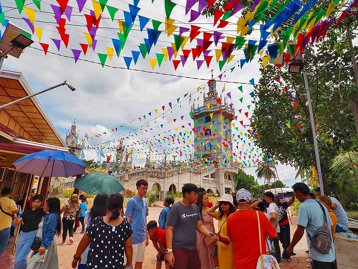
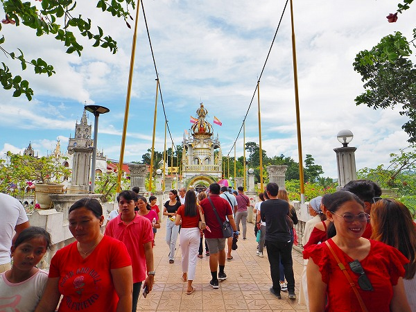
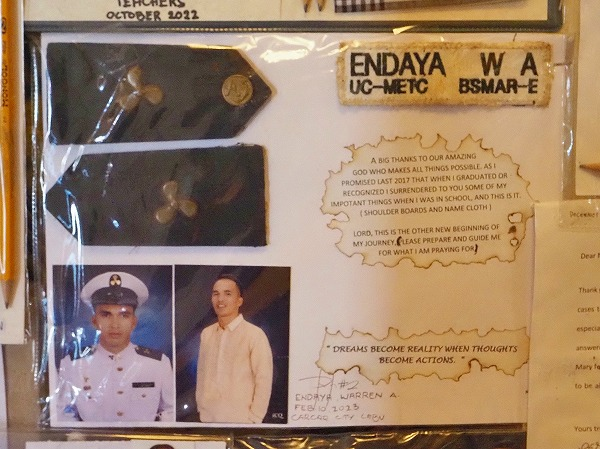
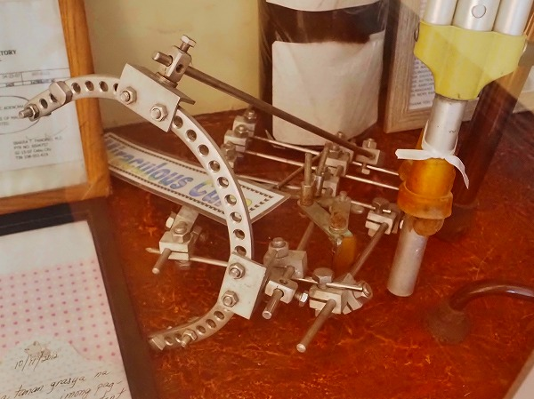

フィリピンセブ島での珍教会巡り。
お次はこの島で最も行きたかったシマラ教会を目指すのであった。
この教会は今、セブ島で最もホットな教会である。
それがどんなところかは追々紹介しよう。
セブシティの南バスターミナルからシマラを目指す。
チケット売り場にて「バスorエクスプレス？」と聞かれたので迷わずエクスプレスと告げる。
セブの交通事情がある程度判って来たのでここは多少値が張っても快適さを優先するべし、と判断したわけだ。
渋滞も凄いのだがそれ以上に道路が結構ガタガタなのだ。
さて、チケットを買い、目指す乗り場に行くと・・・あれ？ボロっボロのワゴン車しかありませんけど？
私が乗る高級エクスプレス号はまだでございますか？
そこに運ちゃんが来て「おう、コレがエクスプレスよ！」と満面の笑み。
えええ～。これただのワゴン車じゃん。しかも信じられない程に乗客がぎゅうぎゅうに乗っている。
試しに数えたら私で１９人目。
座席と座席の間に箱が置かれていて、オマエはそこに座れという。
マジか。
ラグジュアリーであったはずのエクスプレスの旅はこうして始まった・・・
しかも出発直前にもう一人乗り込んできて計２０名。
エクスプレスことヨレヨレワゴン車は黒い煙を吐きながらシマラ教会へと向かうのであった・・・
２時間後、エクスプレス、もといヨレヨレワゴン車は教会の参道に着いた。
事前のリサーチではバスに乗った場合、教会より手前のシマラの街で停まり、そこからバイタクに乗り換えて教会に行くのだが、このワゴン車は直接教会の近くまで行くので結果、バスより早く着くのだそうな。
だからエクスプレスって言ってたのか！

教会の参道には数多くの店がひしめきあっており、その人気の程が伺える。
参拝者はほぼ地元の人で、観光客らしき人の姿は少なかった。
あちこちにマリアを称えるポスターが貼られている。
セブでは元々幼子キリストであるサントニーニョ信仰が盛んなのだが、この教会に於いてはマリア信仰に特化している。
境内に入るとマリア像やセントニーニョ像などが並んでおり、人々が熱心に祈りを捧げている。
そこを過ぎるといよいよ教会の本丸に近づいてくる。
まずはフィリピン人が大好きな記念撮影コーナー。
大勢の人が記念撮影の順番を待っている。
「I ♡ＭＡＭＡ ＭＡＲＹ」とある。 ＭＡＭＡ ＭＡＲＹとは聖母マリアの事だ。
その背後に教会の全容が見える。その姿に腰を抜かしそうになった。
まるで中世ドイツの古城のような、あるいは巨大なゴシック建築教会群のような、はたまたそれを模したテーマパークのような圧倒的な規模の建築群が姿を現すのだ。
あまりの規模の大きさにしばらく考えが及ばなくなる。
これは何だ？
アジアの片田舎にこんなに凄い宗教施設があるとか全然信じられないんですけど。
夢の中にいるようにフワフワとした気分で先に進む。

教会へ向かう通路には大勢の人が溢れている。
この教会の人気が伺える。
それにしてもいちいち豪華な施設だ。
何が人々をこの教会に向かわせるのだろうか。
この教会がセブで異常な人気を誇るのには理由がある。
この教会の成り立ちを紐解いてみよう。
実はこの教会の歴史は案外浅い。
この教会が創建されたのは1996年。翌年マリア像が安置される。
さらに翌年の1998年、教会周辺でデング熱が流行する。
その年のマリアの誕生日にマリア像の目から涙が流れ、苦しんでいる人たちが病から回復したのだという。
これを機にセブの人達から「願いが叶う教会」として人気を博したのだ。
そして今では巨大な施設を構え、セブ最大のパワースポットとなったのである。
通路には長い行列が出来ている。
涙を流したマリア像に礼拝する人達の列だ。
かなり長い列で、しかも見る限り列が進んでいる様子はない。
警備員に聞いたら数時間待つと言われたので残念だが諦めましたよ。
マリア像とは別に博物館の案内もある。
行列を横目に礼拝堂に行ってみる。
丁度礼拝の時間帯で、大勢の人が椅子に座って神父の話を聞いていた。
話の内容は凄く簡単な英語で、サンキューママとかウィラブママとかの繰り返し。
フィリピン人の大半は英語を理解しているというが、それでも多くの人に理解してもらおうと敢えて平易な表現を選んでいるのだろう。
にしても中学一年生レベルの英語で神の偉大さを語るという、ある意味恐ろしく難しいミッションだ。
祭壇の装飾や天井の絵画などはかなりゴージャスだった。
礼拝堂の外には大勢の人がグッズ売場に押し寄せていた。ロザリオやポスターやネックレスなどが売れていたようだ。
もちろんマリア像やキリスト像も売られている。
その前にあるのは大量のロウソク奉納コーナー。
カラフルなロウソクが奉納されているが、色にも意味がある。
赤：愛
金：健康
緑：試験
ピンク：感謝
青：就職
黄色：平和
紫：成果
クリーム：変化
グレー：救い
オレンジ：和解
白：純粋
茶色：使命
黒：魂
願い事別にロウソクを捧げるのだ。その数は相当なものだ。
下を見ると溶けたロウソクの死骸が浮いていた。色がカラフルな分だけにかえって残酷さが際立つ。
礼拝堂から先程通った撮影スポットを見ると「WE LOVE MAMA MARY」の植え込み。
どんだけ好きなんですか、マリア様。
行列の先には塔があり、そこには大きなセントニーニョ像が。
礼拝堂の隣には涙を流すマリア像に謁見せんとする長い行列が続いている。
その行列の傍らにはガラスばりのショーケースのようなものが並んでいる。
見れば無数の松葉杖だ。
これは病気や怪我で松葉杖を使っていた人たちがここのマリア様に祈って足が治り、必要なくなって奉納したものだ。
その数は膨大でこの教会の御利益がいかに凄いかを如実に物語っている。
マリア像への行列はまだまだ続く。
ちなみに博物館は改装のため閉鎖されていた。残念。
行列は階段の先まで続く。
色んな意味で横着そうなセブの人々がこんなに我慢強いとは少し意外だった。
こちらは本物のマリア像に似せたマリア様。
ここはそんなに並ばなくとも礼拝することが出来る。
大勢の若い女性がマリア像に祈りを捧げていた。
ラーメン屋の行列にすら絶対並びたくないヘタレの私はマリア像に祈ることよりも人々が祈っている現象の方に興味があるので、そちら方面をじっくり観察してみる。
気になるのがショーケースに大量に貼られている紙の数々。
マリア様を称えるメッセージなどが展示されている。
多かったのが大学合格のお礼。
こちらは資格試験に合格した人たちのお礼。
最後に神に最高の栄誉がありますように、と書かれてている。

軍関係の試験を突破したのだろうか。
他にも数多くの合格のお礼のメッセージがあった。
そして奉納物の大半を占める松葉杖の数々。
杖だけでなく、歩行装具や車椅子も沢山奉納されていた。
これらはみなマリア様のお陰で治った人々が奉納したものだ。
それにしても凄い数だ。
教会を開設して30年足らずでこれだけの数の人の病を治したというのであれば、まさにそっちの方が奇跡と言えよう。

これは・・・何かの手術器具でしたっけ？
結構衝撃的な幼児の姿。
重病だけど助かったみたいです。よかったよかった。
日本の場合、願い事をする際に絵馬やメッセージを奉納するものだ。
しかしカトリック系の教会では願いが叶ったお礼としてこのようなメッセージ付きの写真や松葉杖などを奉納するようだ。
船の模型奉納。
日本では金刀比羅宮などに船絵馬や船模型が奉納される。
これもまた航海安全を祈願する現世利益的な願いなのだろう。
素敵なステンドグラス。
このように建物の細かい所も豪華で、潤沢な資金がある事が伺える。
ズラリと並んでいるのは世界各国のマリア像。
国や地域によってスタイルが若干違ったりするのだ。
これらのマリア像は本来は博物館に展示されているものらしいのだが、改装中なのでほんの一部が飾ってあるのだろう。
多分韓国のマリア像。髪型や衣装が韓国っぽい。
たっぷり奉納物を堪能したので外に出る。
ここから先は工事中のようだ。
とは言え基本的には建物の近くまで行けるし、通路なども未完成だが通行できる。
工事中だが、部分的には出来上がっているところもあり、それらを眺めながら歩くことは可能だ。
この辺、完成するまで立入禁止！という日本の工事現場とは違って出来たとこから見てけばー、といった感じがユルくていい。
十字架を背負ったキリストや民衆の人形が一か所に詰め込まれていた。
通路の対面を見る。先程歩いてきた回廊だ。
つまりこの教会は入口から入って反時計回りに一周できるような構成になっているのだ。
しかも完成しているのはまだ半分。
これからまだまだ様々な建物が広がっていくのだろう。
こちらの鳥の塔も未完成。
あと色を塗れば完成なのだが。
その下はメッチャ工事中。
とりあえず一番目立つ所を先に造っておいて後は徐々に造り足していくタイプは他のアジアの寺院などでもよく見たものだ。
この建設プロセスの違いこそ日本と東南アジアの決定的な違いなのかも知れない。
この塔もほぼ完成しているのに完成はまだまだ先である。
最後に大きなマリア像と記念撮影すると、広大な教会をぐるりと一周したこ事になる。
これでシマラ教会巡りは終了。
次から次へとマリア像に会いに来る人々が教会にやってくる。
もうお祭り騒ぎだ。
セブの人達の信仰心の篤さを肌で感じられる凄い場所であった。
本当にマリア様が好きで好きで仕方がないんですね。
感心しました。
セブでビーチも買い物も飽きたなー、とお嘆きの御貴兄にはお勧めいたします。
ちなみに帰りのミニバスは教会から離れたターミナル的な所にあるのでバイタクで移動することになる。
バイタクが見つからなければヒマそうな人に聞けば教えてくれる。
結局帰りも乗り心地の悪いワゴン車に詰め込まれ揺られながらセブシティに戻った。
あー、疲れた！
次の珍教会へＧＯ！
セブ島珍教会巡りへ戻る
珍寺大道場 HOME